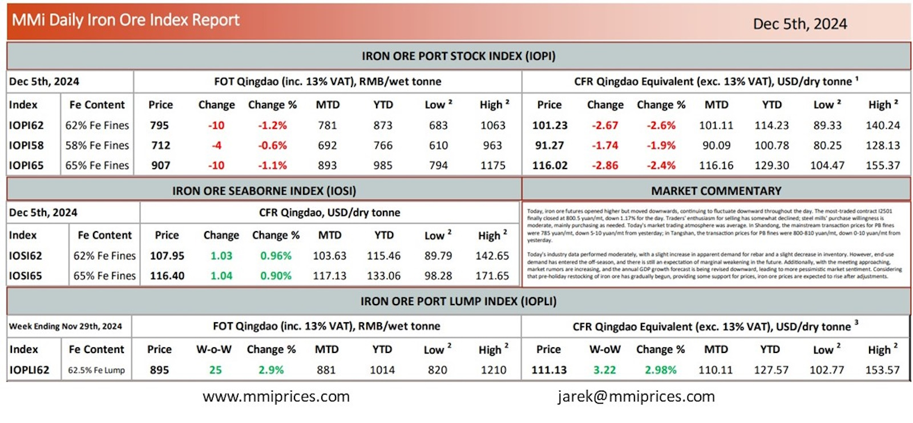

Today, iron ore futures opened higher but moved downwards, continuing to fluctuate downward throughout the day. The most-tradedcontract I2501 finally closed at 800.5 yuan/mt, down 1.17% for the day. Traders’ enthusiasm for selling has somewhat declined; steel mills’ purchase willingness is moderate, mainly purchasing as needed. Today’s market trading atmosphere was average. In Shandong, the mainstream transaction prices for PB fines were 785 yuan/mt, down 5-10 yuan/mt from yesterday; in Tangshan, the transaction prices for PB fines were 800-810 yuan/mt, down 0-10 yuan/mt from yesterday. Today’s industry data performed moderately, with a slight increase in apparent demand for rebar and a slight decrease in inventory. However, end-use demand has entered the off-season, and there is still an expectation of marginal weakening in the future. Additionally, with the meeting approaching, market rumors are increasing, and the annual GDP growth forecast is being revised downward, leading to more pessimistic market sentiment. Considering that pre-holiday restocking of iron ore has gradually begun, providing some support for prices, iron ore prices are expected to rise after adjustments.

Download PDFSource: Metals Market Index (MMI)